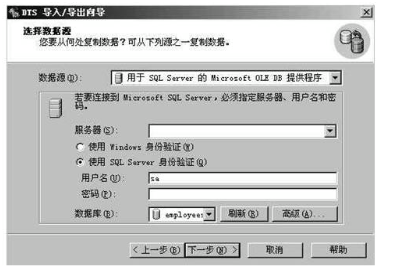
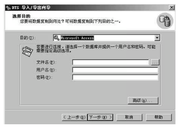
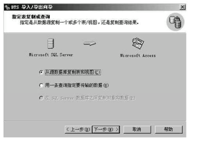
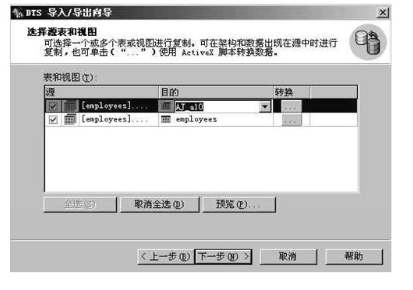
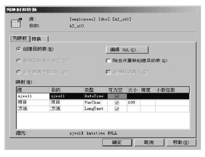
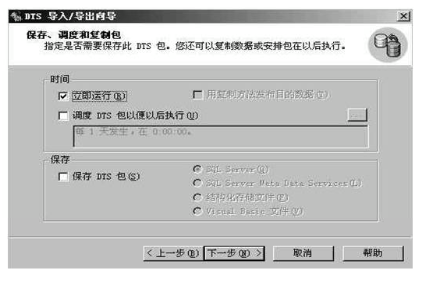
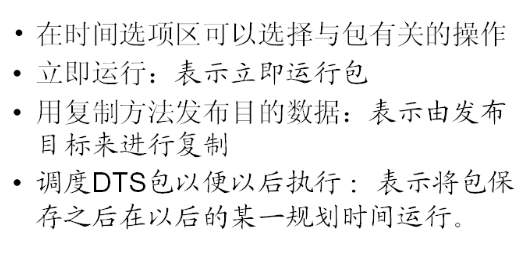
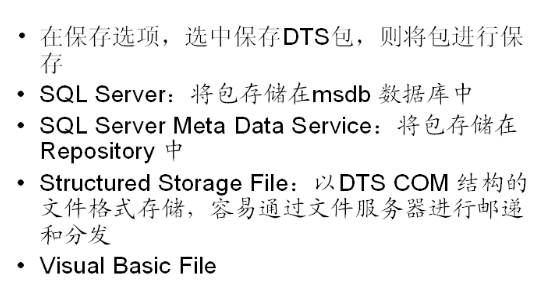
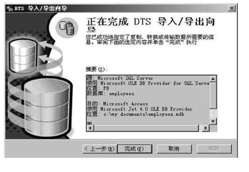

数据转换服务的概念
通常数据总是以不同的格式，存储在不同的地方，有的可能是文本文件，有的虽然具有表结构但不属于同一种数据源。这些情况极大地妨碍了数据的集中处理。为此SQL Server提供了DTS（Data Transformation Servers）组件。
DTS本身包含多个工具，并提供了接口来实现在任何支持OLEDB的数据源间导入，导出或传递数据，并使这一工作变得简单，高效。
利用DTS可能在任何OLEDB，ODBC 驱动程序的数据源或文本文件和SQL Server之间导入导出或传递数据具体表现在：
数据的导入导出服务：
通过读写数据在不同应用程序间交换数据。例如：可以将文本文件或Microsoft Access数据库导入到SQL Server，也可以把数据从SQL Server导出到任何OLEDB数据源。
转换数据：
所谓传递是指在数据未到达目标数据源前而对数据采取的系列操作。比如：DTS允许从源数据源的一列或多列计算出新的列值，然后将其存储在目标数据库中。
传递数据库对象
在异构数据源情况下，DTS的内置工具只能在数据源间传递表定义和数据。如果要传递其他数据库对象，如索引，约束，视图时，必须定义一个任务，从而在目标数据库上执行那些包含在任务中的SQL语句，SQL语句是被用来创建这些数据库对象的。
DTS结构
DTS将数据导入，导出或传递定义成可存储的对象，即包裹或称为包，每一个包都是包括一个或具有一定顺序的多个任务的工作流，每个任务可以将数据从某一数据源拷贝至目标数据源，或使用Active脚本转换数据，或执行SQL语句，或运行外部程序。也可以在SQL Server数据源间传递数据库对象。包对象用来创建并存储步骤，这些步骤定义了一系列任务执行的顺序，以及执行任务的必要细节。
包是顶层对象，它包含三种底层对象：连接，任务，步骤。
连接：定义了有关源和目标数据的信息，这些信息包括数据格式和位置以及安全认证的密码。DTS可不包含或包含多个连接
任务：每个DTS包都含有一个或多个任务，每个任务都是数据转换（传递）处理的工作项目。
步骤：步骤对象定义了任务执行的顺序，以及某一任务的执行是否依赖前一任务的结果。步骤的一个重要特性是步骤的优先权约束。
数据的导入
方法一：用企业管理器
1， 打开企业管理器，打开要导入数据的数据库，在表上按右键，所有任务——导入数据，弹出DTS导入/导出向导，按下一步
2， 选择数据源，即要导入的文件，按下一步
3， 选择目的，选择Microsoft OLEDB 提供程序，选择数据库服务器，然后单击必要的身份验证方式。按下一步
4， 在指定表格复制或查询对话框中，单击复制表格
5， 在选择源表格对话框中，单击全部选定。下一步，完成。
方法二：Transact—SQL语句
数据的导出
方法一：用企业管理器
1， 打开企业管理器，打开要导入数据的数据库，在表上按右键，所有任务——导入数据，弹出DTS导入/导出向导，按下一步
2，单击下一步就会出现导出数据源对话框

3，单击下一步，则选择目的对话框

4，单击下一步，则出现指定表复制或查询对话框

5，单击下一步，选择源表和视图对话框

6，



8，

方法二：Transact—SQL语句